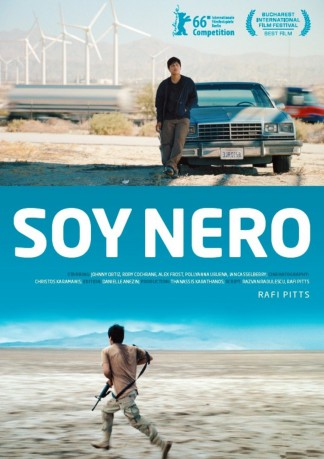

#6298 Soy Nero
 
 IMDB-Wertung: 7.3 / 10
IMDB-Wertung: 7.3 / 10  Metascore: 0
Metascore: 0 
Der 19-jährige Nero ist Amerikaner, Mexikaner, wenn man es ganz genau nimmt. Aufgewachsen ist er in Los Angeles, irgendwann musste er wieder gehen. Doch Nero hat sich sein Zuhause selbst ausgesucht und dorthin will er wieder zurück. Es gelingt ihm, an den Grenzkontrollen vorbei, sich durchzuschlagen bis nach Los Angeles. Hier lebt sein Bruder in einer fürstlichen Villa in Beverly Hills, in einem prachtvollen Möglichkeitsraum, der eindrücklich vermittelt, was es bedeuten kann, echter U.S. Bürger zu sein. Doch wie begrenzt auch dieser Raum ist, wird Nero schneller klar als ihm lieb ist. Nur noch eine Möglichkeit bleibt ihm, auch rechtlich zu denen zu gehören, mit denen er im selben Land leben will: Nero wird zum Green-Card-Soldaten und zieht in die Kriegsgebiete der USA, wird zum Kämpfer für diese seltsame Freiheit, die der Westen einst versprochen hat. Kehrt er lebendig zurück, gewinnt er die Staatsbürgerschaft der Vereinigten Staaten.
Jahr: 2016
Dauer: 112 Minuten
FSK: 12
Land: Deutschland Studio: Neue Visionen FilmverleihTonspuren:
Untertitel:
Auflösung: SD (720x388) Größe: 1454 MB
Genre: Drama
Regisseur: Rafi Pitts
Drehbuch: Eric Summer
Soundtrack:
Darsteller:
 Aml Ameen als Private Bronx
Aml Ameen als Private Bronx Rory Cochrane als Sergeant McCloud
Rory Cochrane als Sergeant McCloud- Khleo Thomas als Mohammed
 Michael Harney als Seymour
Michael Harney als Seymour Joel McKinnon Miller als Sergeant Frank White
Joel McKinnon Miller als Sergeant Frank White- Alex Frost als Beverly Hills Police Officer
- Kyle Davis als Armstrong - the Deminer
- Pollyanna Uruena als Enterprise
 Dennis Cockrum als U.S Consulate Official
Dennis Cockrum als U.S Consulate Official Richard Portnow als Murray - the Garage Owner
Richard Portnow als Murray - the Garage Owner- Chloe Farnworth als Freedom
 Johnny Ortiz als Nero Maldonado
Johnny Ortiz als Nero Maldonado Ian Casselberry als Jesus Maldonado
Ian Casselberry als Jesus Maldonado- Darrell Britt-Gibson als Private Compton
- Richie Stephens als MP1
- Chala Savino als Hillary
- Rosa Isela Frausto als Mercedes
- LynNita Ellis als Heartless Driver
- Roger Lim als Garage Client
- Kevin Ketcham als MP2
- Michael DiBacco als Ward Officer
- Derrick White als Milton
- Claire Louis als Check
- Yuri Zackoqv als Corporal Ramos
- Aquiles Medellin als Boy at the Fence
- Paul Bleiberg als Cop 1
- Jacob Alsbrook als Mr. Jones
- Veronica Ruthie Sigel als Bee Girl - Seymour's daugnter
- Edgar Coronel als Agent Alvarez
- Andrea Rodríguez als Widow
- Vladimir Zamudio als Emilio
- Jon Mahlow als Cop 2
Datei: X:\2016(N-Z)\Soy Nero (2016, FSK12, 720x388).mkv seit 06.06.2017
Festplatte: HD 2016(A-Z)
 Es gibt insgesamt 182 Filme in der Gruppe '2016(N-Z)'
Es gibt insgesamt 182 Filme in der Gruppe '2016(N-Z)'